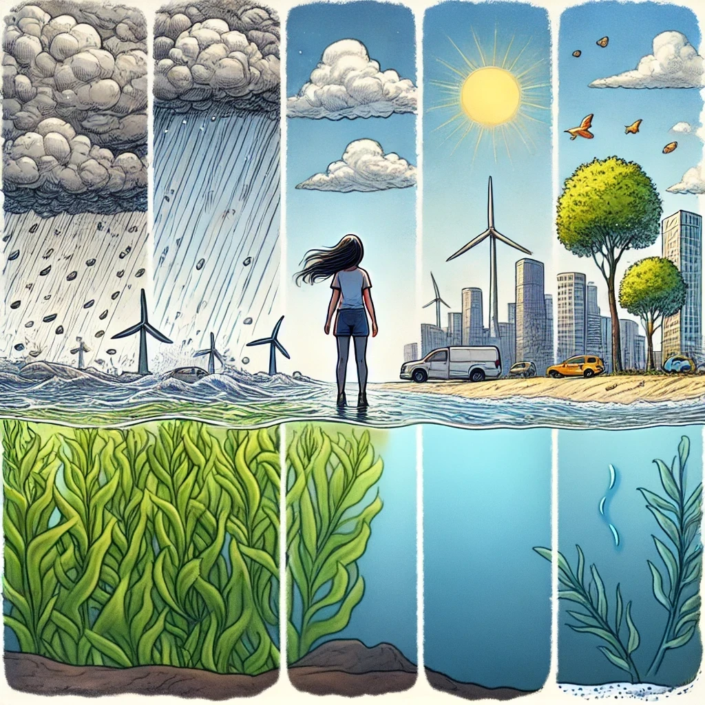

Just like seaweed moves with the waves, we too can adapt to life’s unpredictable currents. Learning to resonate with the changes around us allows us to thrive. Begin by being a passive observer, discerning the differences between your past environment and your new destination. Embrace each shift, and with time, you’ll find that like seaweed, you can bend, flow, and flourish no matter where the waves take you.
Seaweed is firmly rooted to the ocean floor through a structure called the holdfast, which anchors it securely in place, even amidst strong ocean currents. Though it doesn’t absorb nutrients like plant roots, the holdfast ensures the seaweed stays grounded. Similarly, we must build strong foundations in life through routines, passions, and meaningful relationships. Just as the holdfast anchors seaweed, these aspects of life anchor us, providing stability in times of change
Seaweed flourishes in a variety of conditions due to its natural elasticity. Its flexible structure allows it to bend with the currents without breaking, which helps it withstand strong waves and turbulent waters. This elasticity is key to its resilience. Similarly, in life, embracing difficult situations with flexibility and adaptability helps you thrive. Like seaweed, you can develop resilience and thrive even in adversity by bending, not breaking, in the face of challenges.
Seaweed absorbs its nutrients directly from the water through its entire surface, unlike land plants that rely on roots. It efficiently absorbs minerals like nitrogen, phosphorus, and potassium, vital for its growth. This process teaches us an important lesson: just as seaweed draws nourishment from its environment, we too must nurture our body, mind, and soul. Prioritize self-care by feeding yourself nutritious food, resting when needed, and surrounding yourself with environments that support your well-being.
Like seaweed that bends with the waves but never breaks, flexibility helps us navigate life’s uncertainties. Stay open to change and new possibilities, saying, 'I accept what comes to me and I will utilize all of my resources around me.' Just as seaweed uses its surroundings to thrive, we too can draw strength from our environment and adapt to whatever challenges arise, knowing that resilience comes from our ability to bend rather than resist.